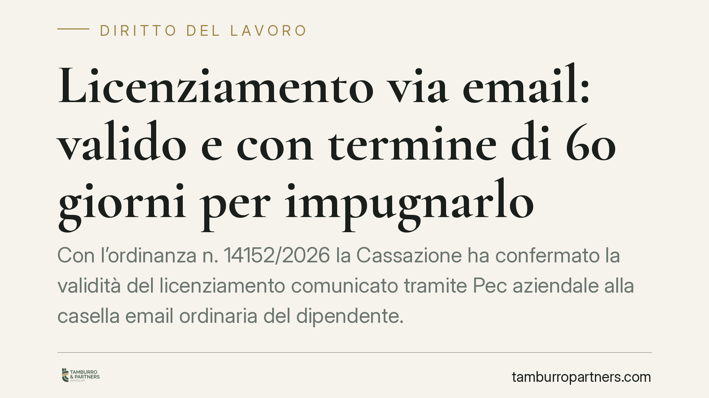

Licenziamento via email: valido e con termine di 60 giorni per impugnarlo
Con l'ordinanza n. 14152/2026 la Cassazione ha confermato la validità del licenziamento comunicato tramite Pec aziendale alla casella email ordinaria del dipendente. Dal momento della ricezione decorre il termine di decadenza di 60 giorni per impugnare il recesso. Una pronuncia che incide sui tempi di reazione del lavoratore e sulla gestione documentale del datore.

Il caso
Un lavoratore riceveva il licenziamento tramite Pec aziendale, indirizzata alla sua email ordinaria. Impugnava il recesso sostenendo l'invalidità della comunicazione per difetto di forma. La Corte d'Appello di Bari respingeva la tesi; la Cassazione, con l'ordinanza n. 14152 del 14 maggio 2026, ha confermato questa lettura.
Il punto centrale non è solo la validità della forma telematica, ma la conseguenza che ne deriva: dalla ricezione dell'email scatta il termine di decadenza per impugnare.
Inquadramento normativo
L'art. 2 della l. 604/1966 richiede che il licenziamento sia comunicato per iscritto. La legge non impone un canale specifico: non pretende la lettera raccomandata né un formato cartaceo. Conta che la volontà di recedere sia manifestata in forma scritta e che raggiunga il destinatario.
L'email soddisfa il requisito della forma scritta. La comunicazione via Pec o posta elettronica integra quindi un atto scritto idoneo a produrre effetti, purché sia dimostrabile la ricezione da parte del lavoratore.
Una volta ricevuta la comunicazione, entra in gioco l'art. 6 della l. 604/1966. La norma prevede un doppio termine di decadenza. Il primo è di 60 giorni dalla ricezione del licenziamento: entro questo termine il lavoratore deve impugnare il recesso, anche con atto stragiudiziale (una semplice lettera o Pec contenente la contestazione). Il secondo termine, di 180 giorni, riguarda il successivo deposito del ricorso giudiziale o la richiesta di conciliazione.
Decadenza significa perdita del diritto di impugnare: trascorsi i 60 giorni senza contestazione, il licenziamento diventa inattaccabile, a prescindere dai suoi vizi di merito.
Implicazioni pratiche
Per il lavoratore il messaggio è netto. La ricezione di un'email di licenziamento non è un fatto da valutare con calma: fa partire un cronometro. Chi attende la raccomandata cartacea o un atto formale rischia di lasciar scadere il primo termine senza accorgersene.
Il momento della ricezione diventa decisivo. Per la Pec la prova è agevole, grazie alle ricevute di consegna. Per l'email ordinaria la questione è più delicata: occorre dimostrare che il messaggio è entrato nella sfera di conoscibilità del destinatario. Vale la presunzione di conoscenza dell'art. 1335 del codice civile, secondo cui l'atto si considera conosciuto quando giunge all'indirizzo del destinatario, salvo prova dell'impossibilità incolpevole di averne notizia.
Per il datore di lavoro la pronuncia conferma la praticabilità del canale telematico, ma impone rigore nella tracciabilità. Un'email inviata a un indirizzo errato, o senza evidenza della consegna, espone a contestazioni sulla stessa esistenza della comunicazione.
Resta un profilo da non sottovalutare: la validità formale non sana eventuali vizi sostanziali del licenziamento. Giustificato motivo, giusta causa e rispetto delle procedure restano requisiti autonomi. La forma telematica agevola la comunicazione, non legittima un recesso privo di fondamento.
Cosa fare in concreto
- Controllate le caselle email con regolarità. Se siete lavoratori, verificate anche le email ordinarie oltre alla Pec: un licenziamento può arrivare da lì e far partire i termini.
- Annotate la data di ricezione. È il dato da cui si calcolano i 60 giorni. In caso di dubbio, considerate la data più risalente.
- Impugnate per iscritto entro 60 giorni. È sufficiente un atto stragiudiziale che contesti il licenziamento; non è necessario avviare subito la causa, ma il termine va rispettato.
- Conservate le prove di invio e ricezione. Se siete datori, archiviate ricevute Pec, log di consegna e riscontri. La tracciabilità è ciò che rende opponibile la comunicazione.
- Consultate un professionista prima della scadenza. Consigliamo di non attendere il centottantesimo giorno: la valutazione dei vizi del recesso richiede tempo e documenti.
Conclusione
La digitalizzazione delle comunicazioni di lavoro produce effetti concreti sui tempi di reazione. L'ordinanza n. 14152/2026 chiude il margine di incertezza: l'email vale, e i termini corrono. Chi riceve un licenziamento telematico ha lo stesso tempo di chi lo riceve su carta, ma spesso meno consapevolezza di averlo ricevuto.
---
*Contributo informativo a cura di Tamburro & Partners - Avv. Giuseppe Tamburro. Non costituisce parere legale.*
Ogni storia di lavoro ha i suoi tempi.
Se gestisci HR e vuoi un confronto su contenzioso, ispezioni o licenziamenti, scrivi allo studio. Ti rispondiamo entro un giorno lavorativo.